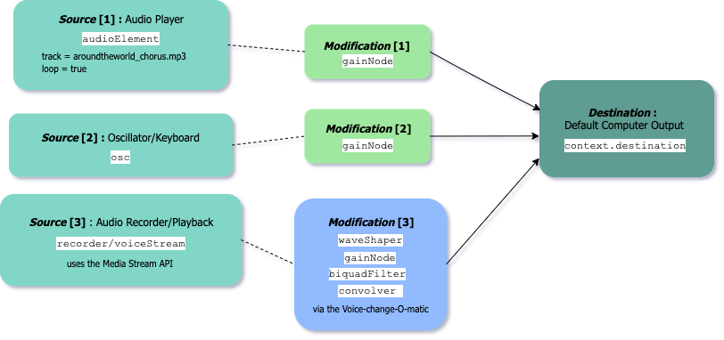
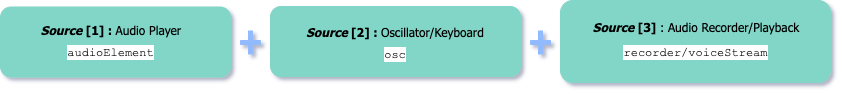

CART 351 | Web Audio API Presentation
[1] Introduction
[2] Features
[3] How To
[4] --
[5] --
[6] --
[7] API example
Web Audio API: example

Using the Web Audio API
AUDIO FILE PLAYBACK
=> chorus
OSCILLATOR
=> verse
vol:
AUDIO RECORDING/PLAYBACK
=> vocals
record/stop
